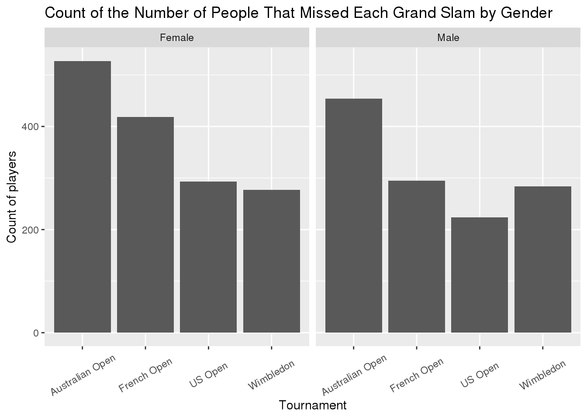

Men’s and Women’s Tennis Grand Slam Championships
library(here)
library(tidyverse)
library(ggplot2)
dat1 <- read_csv(here::here("data", "grand_slam_timeline.csv"))
dat2 <- read_csv(here::here("data", "grand_slams.csv"))
dat3 <- read_csv(here::here("data", "player_dob.csv"))The first data set comes from the grand_slam_timeline.csv file on the Tidy Tuesday website. The data set has 12,605 observations of 5 variables. The variables are fairly self-explanatory, player is the name of the player, year is the year of the tournament, tournament gives the name of the tournament, outcome gives what position in the tournament the player finished, and gender gives the gender of the player.
The second data set comes from the grand_slams.csv file on the Tidy Tuesday website. This data set has only 416 observations on 6 variables. This data set provides the same variables year and gender as the previous data set. Similarly, grand_slam provides the same information as tournament in the previous data set, and name provides the same information as player. This data set additionally provides the rolling_win_count which gives the total number of wins for the player at the time of that tournament, and tournament_date which gives the approximate date that the tournament took place.
The third data set comes from the player_dob.csv file on the Tidy Tuesday website. This data set has 105 observations of 5 variables. The name variable is the same as in the previous data set. For this data set, grand_slam indicates what tournament the player was playing at when they won their first grand slam. date_of_first_title gives the date at which this occurs. date_of_birth gives the date of birth of the player, allowing age to be calculated by finding the difference in number of days between the date_of_first_title and date_of_birth to give the age at the time of first grand slam championship.
Question 1
What grand slam is most common to win a first title at? * I will explore this by using the third data set to create a bar chart displaying how many players won their first grand slam at a given tournament. This could also be explored with facets such as age and gender.
dat3 %>%
filter(!is.na(grand_slam)) %>%
ggplot(., aes(x = grand_slam)) +
geom_bar() +
ggtitle("Tournament at Which First Grand Slam Title Was Won") +
ylab("Count of People") +
xlab("Tournament")
Question 2
Do players that are younger at the time of first grand slam win more tournaments overall? * I will analyze this by plotting the age at first win vs. number of rolling wins at the end of the data set. This could also be analyzed broken down into gender categories.
dat2 %>%
group_by(name) %>%
filter(rolling_win_count == max(rolling_win_count)) %>%
left_join(dat3, c("name" = "name")) %>%
filter(!is.na(age)) %>%
mutate(age_years = (age/365.25)) %>%
ggplot(., aes(x = age_years, y = rolling_win_count)) +
geom_point() +
geom_smooth() +
ylim(0, 25) +
ggtitle("Total Number of Grand Slams Won vs. Age at First Win") +
xlab("Age (in years)") +
ylab("Total number of wins")dat2 %>%
group_by(name) %>%
filter(rolling_win_count == max(rolling_win_count)) %>%
left_join(dat3, c("name" = "name")) %>%
filter(!is.na(age)) %>%
mutate(age_years = (age/365.25)) %>%
ggplot(., aes(x = age_years, y = rolling_win_count, color = gender)) +
geom_point() +
geom_smooth() +
ylim(0, 25) +
ggtitle("Total Number of Grand Slams Won vs. Age at First Win by Gender") +
xlab("Age (in years)") +
ylab("Total number of wins")Question 3
How does the age of first title won differ between males and females? * This can be analyzed by creating a histogram of the age at which the first title is won and faceting by gender.
dat2 %>%
group_by(name) %>%
filter(rolling_win_count == max(rolling_win_count)) %>%
left_join(dat3, c("name" = "name")) %>%
filter(!is.na(age)) %>%
mutate(age_years = (age/365.25)) %>%
ggplot(., aes(x = age_years)) +
geom_histogram() +
facet_wrap("gender") +
ggtitle("Distribution of Age at Which First Grand Slam was Won by Gender") +
xlab("Age (in years)") +
ylab("Number of people")
Question 4
What tournament was most frequently missed? * This can be found by creating a bar chart of the tournaments and the counts of the number of players that were absent from the tournament. Additionally this could be split into male and female categories.
dat1 %>%
filter(outcome == "Absent") %>%
ggplot(., aes(x = tournament)) +
geom_bar() +
ggtitle("Count of the Number of People That Missed Each Grand Slam") +
xlab("Tournament") +
ylab("Count of players")dat1 %>%
filter(outcome == "Absent") %>%
ggplot(., aes(x = tournament)) +
geom_bar() +
facet_wrap("gender") +
ggtitle("Count of the Number of People That Missed Each Grand Slam by Gender") +
xlab("Tournament") +
ylab("Count of players")